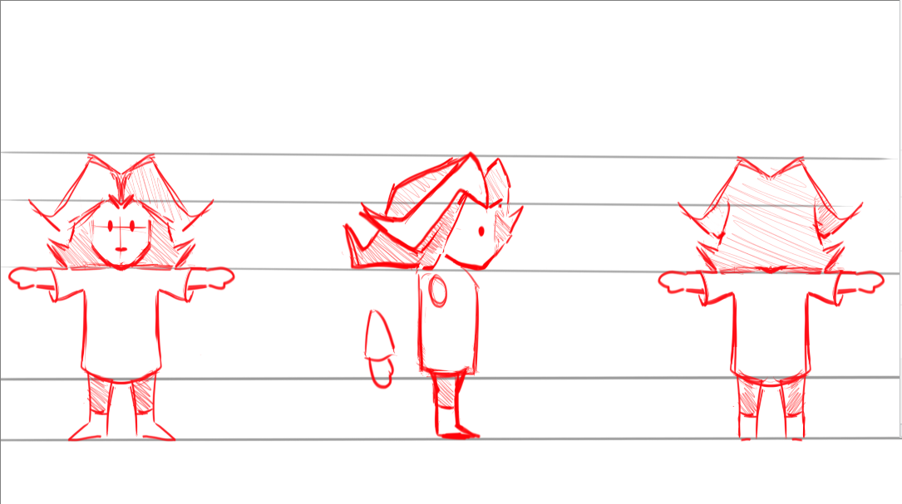

🐜
Archive Ant says: Don't binge!
When consuming media, remember to chew slowly,
and take time between "meals" to digest.
To mix my metaphors more,
give your eyes & mind frequent breaks. Thank you!
🐜
Here's all the projects I've ever tried to put online, as far as I (care to) recall. Note: If your looking for what lessons I learned each month of the year and things read my blog and not this, here the further back you scroll, the cringier it gets. You've been warned.
2026
I finally got this website up and running. I also started a new Instagram account and business SmileyFoxyPortraits to share portraits of Berlin's residents. Dabbled in learning the guitar and my own songs music.2025
Started an Ausbildung as a Steuerfachangestellter (tax clerk) in Berlin, Germany. I also started hating it switched offices mid studies and finally quit after a full year.
Adventures with Anxiety a celste copy
I was also writing a lot of stories and learnings in my blog that year too. I think it helped my writing skills a lot. ^v^
2024
🚧 Working on a storytime animation 🚧character turnaround. I still wanna finish this video someday...
Making (finishing rather) of this website 29th of August.
Godot Adventures with Insecurity. Project lost to time.
This was my first failed but cool attempt at a
game. I guess trying to make a full blown 2.5D game as a first game with 20 people was a bit over my head
but if I didn't have school responsibilities to attend to who knows where this might have gone?
silly showcase of 2.5 animations. I game I had high hopes for but never finished...

2023
Hand drawn portrait exhibition at Spaghettaria resteraunt in Berlin.

Faxstastic game jam entry.
3D gallery of my artworks.
reel with an interesting endingJoined the Creative Session art group in April, I've been drawing portrait ever Sunday ever since.
2022
First artwork were I actually spent a lot of time on it to make it "refined & finished". Made it for a clan party which is a fond memory to this day. 3D model and background copied from Dota 2.
3D model and background copied from Dota 2.
2021
Becoming a jack of all traits. I tabbeled with many art genres even voxel art.
2020
First kinda famous post. 150 likes because I got a shoutout from a reposting/curator account.
Made my first drawing with a Cintiq tablet.